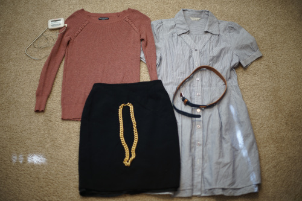

check out sochi in those wicked boots. damb. she stylin.
i was walking and saw a prairie doggie and a bunch of babies!! i tried to get close enough to get a picture but i heard a little doggie call and they all ran back into their hole!! a few seconds later i saw a hawk flying pretty close to the ground so im glad they have their warning system
i promise i dont buy something at the thrift store EVERY time i go! before i had a job i would sit and worry about spending 70 cents on a plushie...
i have a lot of clothes now so i really should sort through them and send some back to where they came from. i almost never buy new clothes anymore. i cant really afford nice quality new clothes and i enjoy hunting for stuff i like in thrift stores, so it works out. most american brands dont make clothes i like anyway these days.